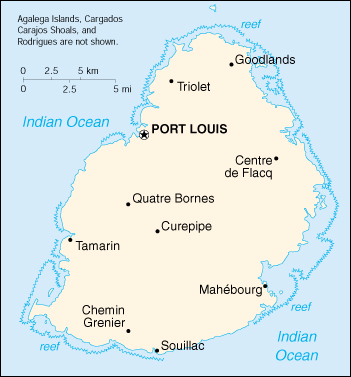

|
Mauritius | |
| Introduction Geography People Government Economy Communications Transportation Military Transnational Issues | ||
|  | ||
| Mauritius | Introduction | Top of Page |
| Background: | Discovered by the Portuguese in 1505, Mauritius was subsequently held by the Dutch, French, and British before independence was attained in 1968. A stable democracy with regular free elections and a positive human rights record, the country has attracted considerable foreign investment and has earned one of Africa's highest per capita incomes. Recent poor weather and declining sugar prices have slowed economic growth leading to some protests over standards of living in the Creole community. |
| Mauritius | Geography | Top of Page |
| Location: | Southern Africa, island in the Indian Ocean, east of Madagascar |
| Geographic coordinates: | 20 17 S, 57 33 E |
| Map references: | World |
| Area: |
total:
1,860 sq km
land: 1,850 sq km water: 10 sq km note: includes Agalega Islands, Cargados Carajos Shoals (Saint Brandon), and Rodrigues |
| Area - comparative: | almost 11 times the size of Washington, DC |
| Land boundaries: | 0 km |
| Coastline: | 177 km |
| Maritime claims: |
continental shelf:
200 NM or to the edge of the continental margin
exclusive economic zone: 200 NM territorial sea: 12 NM |
| Climate: | tropical, modified by southeast trade winds; warm, dry winter (May to November); hot, wet, humid summer (November to May) |
| Terrain: | small coastal plain rising to discontinuous mountains encircling central plateau |
| Elevation extremes: |
lowest point:
Indian Ocean 0 m
highest point: Mont Piton 828 m |
| Natural resources: | arable land, fish |
| Land use: |
arable land:
49%
permanent crops: 3% permanent pastures: 3% forests and woodland: 22% other: 23% (1993 est.) |
| Irrigated land: | 170 sq km (1993 est.) |
| Natural hazards: | cyclones (November to April); almost completely surrounded by reefs that may pose maritime hazards |
| Environment - current issues: | water pollution, degradation of coral reefs |
| Environment - international agreements: |
party to:
Biodiversity, Climate Change, Desertification, Endangered Species, Environmental Modification, Hazardous Wastes, Law of the Sea, Marine Life Conservation, Nuclear Test Ban, Ozone Layer Protection, Ship Pollution
signed, but not ratified: none of the selected agreements |
| Mauritius | People | Top of Page |
| Population: | 1,189,825 (July 2001 est.) |
| Age structure: |
0-14 years:
25.53% (male 153,691; female 150,094)
15-64 years: 68.24% (male 404,940; female 407,056) 65 years and over: 6.23% (male 29,588; female 44,456) (2001 est.) |
| Population growth rate: | 0.88% (2001 est.) |
| Birth rate: | 16.5 births/1,000 population (2001 est.) |
| Death rate: | 6.82 deaths/1,000 population (2001 est.) |
| Net migration rate: | -0.92 migrant(s)/1,000 population (2001 est.) |
| Sex ratio: |
at birth:
1.02 male(s)/female
under 15 years: 1.02 male(s)/female 15-64 years: 0.99 male(s)/female 65 years and over: 0.67 male(s)/female total population: 0.98 male(s)/female (2001 est.) |
| Infant mortality rate: | 17.19 deaths/1,000 live births (2001 est.) |
| Life expectancy at birth: |
total population:
71.25 years
male: 67.26 years female: 75.31 years (2001 est.) |
| Total fertility rate: | 2.01 children born/woman (2001 est.) |
| HIV/AIDS - adult prevalence rate: | 0.08% (1999 est.) |
| HIV/AIDS - people living with HIV/AIDS: | NA |
| HIV/AIDS - deaths: | NA |
| Nationality: |
noun:
Mauritian(s)
adjective: Mauritian |
| Ethnic groups: | Indo-Mauritian 68%, Creole 27%, Sino-Mauritian 3%, Franco-Mauritian 2% |
| Religions: | Hindu 52%, Christian 28.3% (Roman Catholic 26%, Protestant 2.3%), Muslim 16.6%, other 3.1% |
| Languages: | English (official), Creole, French, Hindi, Urdu, Hakka, Bojpoori |
| Literacy: |
definition:
age 15 and over can read and write
total population: 82.9% male: 87.1% female: 78.8% (1995 est.) |
| Mauritius | Government | Top of Page |
| Country name: |
conventional long form:
Republic of Mauritius
conventional short form: Mauritius |
| Government type: | parliamentary democracy |
| Capital: | Port Louis |
| Administrative divisions: | 9 districts and 3 dependencies*; Agalega Islands*, Black River, Cargados Carajos Shoals*, Flacq, Grand Port, Moka, Pamplemousses, Plaines Wilhems, Port Louis, Riviere du Rempart, Rodrigues*, Savanne |
| Independence: | 12 March 1968 (from UK) |
| National holiday: | Independence Day, 12 March (1968) |
| Constitution: | 12 March 1968; amended 12 March 1992 |
| Legal system: | based on French civil law system with elements of English common law in certain areas |
| Suffrage: | 18 years of age; universal |
| Executive branch: |
chief of state:
President Cassam UTEEM (since 1 July 1992) and Vice President Angidi Verriah CHETTIAR (since 28 June 1997)
head of government: Prime Minister Sir Anerood JUGNAUTH (since 17 September 2000) and Deputy Prime Minister Paul BERENGER (since 17 September 2000) cabinet: Council of Ministers appointed by the president on the recommendation of the prime minister elections: president and vice president elected by the National Assembly for five-year terms; election last held 28 June 1997 (next to be held NA 2002); prime minister and deputy prime minister appointed by the president and are responsible to the National Assembly election results: Cassam UTEEM reelected president and Angidi Verriah CHETTIAR elected vice president; percent of vote by the National Assembly - NA% |
| Legislative branch: |
unicameral National Assembly (66 seats - 62 elected by popular vote, 4 appointed by the election commission from the losing political parties to give representation to various ethnic minorities; members serve five-year terms)
elections: last held on 11 September 2000 (next to be held by September 2005) election results: percent of vote by party - MSM/MMM 52.3%, MLP/PMSD 36.9%, OPR 10.8%; seats by party - MSM/MMM 54, MLP/PMSD 6, OPR 2 |
| Judicial branch: | Supreme Court |
| Political parties and leaders: | Hizbullah [Cehl Mohamed FAKEEMEEAH]; Mauritian Labor Party or MLP [Navinchandra RAMGOOLAM]; Mauritian Militant Movement or MMM [Paul BERENGER] - in coalition with MSM; Mauritian Militant Renaissance or MMR [Dr. Paramhansa NABABSING]; Mauritian Social Democrat Party or PMSD [Charles Xavier-Luc DUVAL]; Militant Socialist Movement or MSM [Sir Anerood JUGNAUTH] - governing party; Rodrigues Movement or OPR [Joseph (Nicholas) Von MALLY] |
| Political pressure groups and leaders: | various labor unions |
| International organization participation: | ACCT, ACP, AfDB, C, CCC, ECA, FAO, G-77, IAEA, IBRD, ICAO, ICFTU, ICRM, IDA, IFAD, IFC, IFRCS, ILO, IMF, IMO, Inmarsat, InOC, Intelsat, Interpol, IOC, ISO, ITU, NAM, OAU, OPCW, SADC, UN, UN Security Council (temporary), UNCTAD, UNESCO, UNIDO, UPU, WCL, WFTU, WHO, WIPO, WMO, WToO, WTrO |
| Diplomatic representation in the US: |
chief of mission:
Ambassador Usha JEETAH
chancery: Suite 441, 4301 Connecticut Avenue NW, Washington, DC 20008 telephone: [1] (202) 244-1491, 1492 FAX: [1] (202) 966-0983 |
| Diplomatic representation from the US: |
chief of mission:
Ambassador Mark W. ERWIN
embassy: 4th Floor, Rogers House, John Kennedy Street, Port Louis mailing address: international mail: P. O. Box 544, Port Louis; US mail: American Embassy, Port Louis, Department of State, Washington, DC 20521-2450 telephone: [230] 208-2347, 208-2354, 208-9763 through 9767 FAX: [230] 208-9534 |
| Flag description: | four equal horizontal bands of red (top), blue, yellow, and green |
| Mauritius | Economy | Top of Page |
| Economy - overview: | Since independence in 1968, Mauritius has developed from a low-income, agriculturally based economy to a middle-income diversified economy with growing industrial, financial, and tourist sectors. For most of the period, annual growth has been in the order of 5% to 6%. This remarkable achievement has been reflected in increased life expectancy, lowered infant mortality, and a much-improved infrastructure. Sugarcane is grown on about 90% of the cultivated land area and accounts for 25% of export earnings. The government's development strategy centers on foreign investment. Mauritius has attracted more than 9,000 offshore entities, many aimed at commerce in India and South Africa, and investment in the banking sector alone has reached over $1 billion. Economic performance since 1991 has continued strong with solid growth and low unemployment. |
| GDP: | purchasing power parity - $12.3 billion (2000 est.) |
| GDP - real growth rate: | 7.5% (2000 est.) |
| GDP - per capita: | purchasing power parity - $10,400 (2000 est.) |
| GDP - composition by sector: |
agriculture:
10%
industry: 29% services: 61% (1996) |
| Population below poverty line: | 10.6% (1992 est.) |
| Household income or consumption by percentage share: |
lowest 10%:
NA%
highest 10%: NA% |
| Inflation rate (consumer prices): | 5.3% (2000 est.) |
| Labor force: | 514,000 (1995) |
| Labor force - by occupation: | construction and industry 36%, services 24%, agriculture and fishing 14%, trade, restaurants, hotels 16%, transportation and communication 7%, finance 3% (1995) |
| Unemployment rate: | 6.4% (1999 est.) |
| Budget: |
revenues:
$1.1 billion
expenditures: $1.2 billion, including capital expenditures of $NA (1999 est.) |
| Industries: | food processing (largely sugar milling), textiles, clothing; chemicals, metal products, transport equipment, nonelectrical machinery; tourism |
| Industrial production growth rate: | 8% (2000 est.) |
| Electricity - production: | 1.26 billion kWh (1999) |
| Electricity - production by source: |
fossil fuel:
91.27%
hydro: 8.73% nuclear: 0% other: 0% (1999) |
| Electricity - consumption: | 1.172 billion kWh (1999) |
| Electricity - exports: | 0 kWh (1999) |
| Electricity - imports: | 0 kWh (1999) |
| Agriculture - products: | sugarcane, tea, corn, potatoes, bananas, pulses; cattle, goats; fish |
| Exports: | $1.6 billion (f.o.b., 1999) |
| Exports - commodities: | clothing and textiles, sugar, cut flowers, molasses |
| Exports - partners: | UK 32%, France 19%, US 15%, Germany 6%, Italy 4% (1999 est.) |
| Imports: | $2.3 billion (f.o.b., 1999) |
| Imports - commodities: | manufactured goods, capital equipment, foodstuffs, petroleum products, chemicals (1996) |
| Imports - partners: | France 14%, South Africa 11%, India 8%, UK 5% (1999 est.) |
| Debt - external: | $1.9 billion (1998 est.) |
| Economic aid - recipient: | $42 million (1997) |
| Currency: | Mauritian rupee (MUR) |
| Currency code: | MUR |
| Exchange rates: | Mauritian rupees per US dollar - 27.900 (January 2001), 26.250 (2000), 25.186 (1999), 22.993 (1998), 21.057 (1997), 17.948 (1996) |
| Fiscal year: | 1 July - 30 June |
| Mauritius | Communications | Top of Page |
| Telephones - main lines in use: | 223,000 (1997) |
| Telephones - mobile cellular: | 37,000 (1997) |
| Telephone system: |
general assessment:
small system with good service
domestic: primarily microwave radio relay international: satellite earth station - 1 Intelsat (Indian Ocean); new microwave link to Reunion; HF radiotelephone links to several countries |
| Radio broadcast stations: | AM 5, FM 9, shortwave 2 (1998) |
| Radios: | 420,000 (1997) |
| Television broadcast stations: | 2 (plus 11 repeaters) (1997) |
| Televisions: | 258,000 (1997) |
| Internet country code: | .mu |
| Internet Service Providers (ISPs): | 2 (2000) |
| Internet users: | 55,000 (2000) |
| Mauritius | Transportation | Top of Page |
| Railways: | 0 km |
| Highways: |
total:
1,910 km
paved: 1,834 km (including 36 km of expressways) unpaved: 76 km (1998) |
| Waterways: | none |
| Ports and harbors: | Port Louis |
| Merchant marine: |
total:
9 ships (1,000 GRT or over) totaling 61,909 GRT/87,313 DWT
ships by type: cargo 2, combination bulk 2, container 2, liquefied gas 1, refrigerated cargo 2 note: includes a foreign-owned ship registered here as a flag of convenience: India 1 (2000 est.) |
| Airports: | 5 (2000 est.) |
| Airports - with paved runways: |
total:
2
over 3,047 m: 1 914 to 1,523 m: 1 (2000 est.) |
| Airports - with unpaved runways: |
total:
3
914 to 1,523 m: 1 under 914 m: 2 (2000 est.) |
| Mauritius | Military | Top of Page |
| Military branches: | National Police Force (includes the paramilitary Special Mobile Force or SMF and National Coast Guard) |
| Military manpower - availability: | males age 15-49: 339,473 (2001 est.) |
| Military manpower - fit for military service: | males age 15-49: 171,206 (2001 est.) |
| Military expenditures - dollar figure: | $11 million (FY97/98) |
| Military expenditures - percent of GDP: | 0.3% (FY97/98) |
| Mauritius | Transnational Issues | Top of Page |
| Disputes - international: | claims the Chagos Archipelago (UK-administered British Indian Ocean Territory); claims French-administered Tromelin Island |
| Illicit drugs: | minor consumer and transshipment point for heroin from South Asia; small amounts of cannabis produced and consumed locally |
{kind=link}
{kind=link}